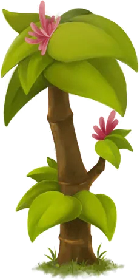

Green Bahri
من حملة تشجير إلى مشروع بيئي موثّق ومستدام
منصّة رقمية تدعم مبادرة زراعة الأشجار في جامعة بحري: نوثّق كل شجرة، نتابع حالتها، وننسّق الرعاية بمشاركة الطلاب والكليات.
- مشاركة تطوعية
- هوية رقمية لكل شجرة
- متابعة ورعاية مستمرة
150 شتلة متاحة للزراعة (ليست أشجاراً مزروعة بعد)
نظرة عامة
نظرة عامة على المشروع
الأرقام ذات شارة «تجريبي» للعرض فقط، وتُستبدل بالأرقام الفعلية.
رؤيتنا
نحو جامعة خضراء مستدامة
الرؤية
جامعة نظيفة وخضراء ومستدامة، يقودها طلاب واعون ومسؤولون.
الرسالة
زراعة الأشجار والعناية بها عبر عمل تطوعي منظم وتوعية بيئية مستمرة.
الهدف
رفع الغطاء الشجري في الجامعة وتحسين مناخها وجودة الحياة فيها.
الأثر
أثر المبادرة
أرقام الأثر محسوبة من بيانات العرض التجريبية.
الزراعة شهرياً تجريبي
عدد الأشجار المزروعة في كل شهر (مثال توضيحي).
6سبتمبر
14أكتوبر
16نوفمبر
0من الأشجار الموثّقة بحالة سليمةتجريبي
≈ ٠٫٨ – ٣٫٣ طن كربون/سنةأثر محتمل عند نضج الأشجار المزروعة وحتى الشتلات الـ١٥٠. تقدير نظري (≈ ٢٢ كغ لكل شجرة ناضجة)، وليس قياساً فعلياً.


المشاركة
كيف تشارك؟
المشاركة اختيارية وتطوعية، ولا تعني تملّك أي شجرة. اختر ما يناسبك:
<<<<<<< HEAD
>>>>>>> ec54581e2756c600ca630d1212ead043c5676018
تبنَّ شجرة
أحضرها للمشتل وتُسجَّل باسمك في الموقع، وكل شجرة تصنع فرقاً.
=======
تبنَّ شجرة
أحضرها للمشتل وتُسجَّل باسمك في الموقع، وكل شجرة تصنع فرقاً.